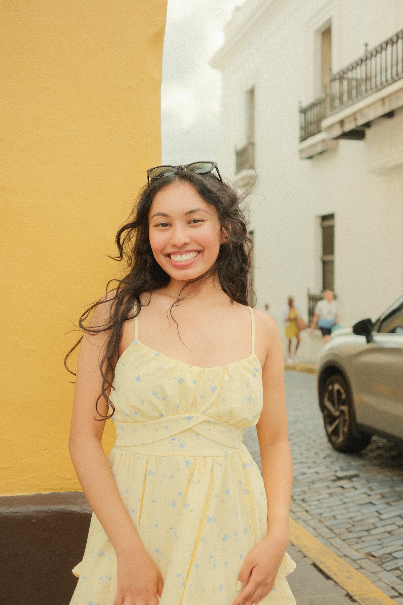

Soft. Cinematic.
Deeply felt.
Film photography that lingers, rendered in the particular light of analog and the grain that makes a moment feel real.
Every frame is a decision.
Soft light. Deliberate exposure.
The grain that makes it feel true.


Four categories. Proposals, portraits, travels, and celebrations, each one approached the same way: with patience, an eye, and the conviction that the best images happen when no one is performing anything.
"There's a cost to each frame that changes how you see. You wait for the right light. You make a decision. You press the shutter."
Jerin Kuruvilla is based in Philadelphia. His work lives in the space between editorial and deeply personal: dreamy, unhurried, rendered in the light that earns its place.
Read more